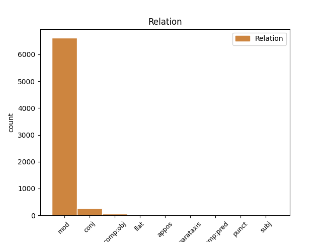
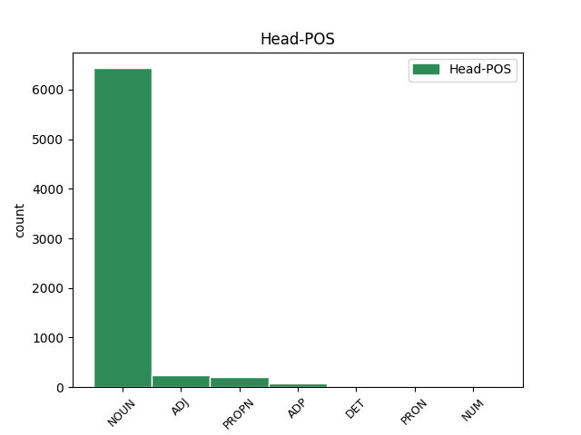
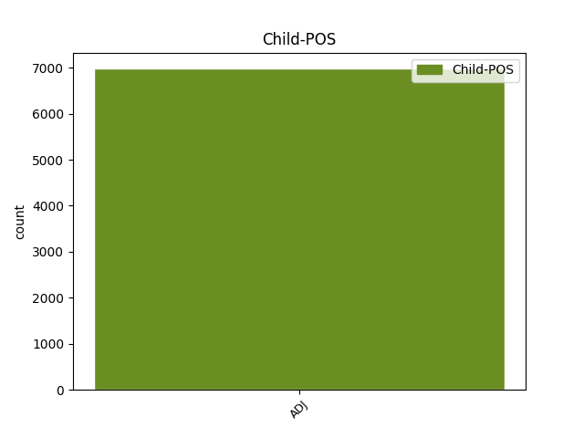

Distribution of features within this leaf



Agreement Rules sorted by frequency.
- When the dependent token is the modifer(mod) of the head token, and the dependent token is ADJ.
1 Međutim _ _ _ _ 0 _ _ _
2 , _ _ _ _ 0 _ _ _
3 kao _ _ _ _ 0 _ _ _
4 što _ _ _ _ 0 _ _ _
5 lagano _ _ _ _ 0 _ _ _
6 , _ _ _ _ 0 _ _ _
7 ali _ _ _ _ 0 _ _ _
8 sigurno _ _ _ _ 0 _ _ _
9 napreduje _ _ _ _ 0 _ _ _
10 širenje _ _ _ _ 0 _ _ _
11 nuklearnih _ _ _ _ 0 _ _ _
12 centrala _ _ _ _ 0 _ _ _
13 po _ _ _ _ 0 _ _ _
14 svetu _ _ _ _ 0 _ _ _
15 usred _ _ _ _ 0 _ _ _
16 ekonomske _ _ _ _ 0 _ _ _
17 isplativosti _ _ _ _ 0 _ _ _
18 dogod _ _ _ _ 0 _ _ _
19 nema _ _ _ _ 0 _ _ _
20 akcidenata _ _ _ _ 0 _ _ _
21 , _ _ _ _ 0 _ _ _
22 tako _ _ _ _ 0 _ _ _
23 će _ _ _ _ 0 _ _ _
24 barem _ _ _ _ 0 _ _ _
25 zasad _ _ _ _ 0 _ _ _
26 i _ _ _ _ 0 _ _ _
27 Internet _ _ _ _ 0 _ _ _
28 stvari _ _ _ _ 0 _ _ _
29 nastaviti _ _ _ _ 0 _ _ _
30 da _ _ _ _ 0 _ _ _
31 postaje _ _ _ _ 0 _ _ _
32 realnost _ _ _ _ 0 _ _ _
33 , _ _ _ _ 0 _ _ _
34 dobrim _ _ _ _ 0 _ _ _
35 delom _ _ _ _ 0 _ _ _
36 i _ _ _ _ 0 _ _ _
37 zato _ _ _ _ 0 _ _ _
38 što _ _ _ _ 0 _ _ _
39 su _ _ _ _ 0 _ _ _
40 mlađe _ _ _ _ 0 _ _ _
41 generacije _ _ _ _ 0 _ _ _
42 već _ _ _ _ 0 _ _ _
43 od _ _ _ _ 0 _ _ _
44 malena _ _ _ _ 0 _ _ _
45 okružene _ _ _ _ 0 _ _ _
46 takvim _ _ _ _ 0 _ _ _
47 tehnološkim tehnološki ADJ Agpmsiy Case=Ins|Definite=Def|Degree=Pos|Gender=Masc|Number=Sing 48 mod _ _
48 konceptom koncept NOUN Ncmsi Case=Ins|Gender=Masc|Number=Sing 0 _ _ _
49 , _ _ _ _ 0 _ _ _
50 pa _ _ _ _ 0 _ _ _
51 i _ _ _ _ 0 _ _ _
52 delimično _ _ _ _ 0 _ _ _
53 integrisane _ _ _ _ 0 _ _ _
54 u _ _ _ _ 0 _ _ _
55 njega _ _ _ _ 0 _ _ _
56 . _ _ _ _ 0 _ _ _
1 Međutim _ _ _ _ 0 _ _ _
2 , _ _ _ _ 0 _ _ _
3 kao _ _ _ _ 0 _ _ _
4 što _ _ _ _ 0 _ _ _
5 lagano _ _ _ _ 0 _ _ _
6 , _ _ _ _ 0 _ _ _
7 ali _ _ _ _ 0 _ _ _
8 sigurno _ _ _ _ 0 _ _ _
9 napreduje _ _ _ _ 0 _ _ _
10 širenje _ _ _ _ 0 _ _ _
11 nuklearnih _ _ _ _ 0 _ _ _
12 centrala _ _ _ _ 0 _ _ _
13 po _ _ _ _ 0 _ _ _
14 svetu _ _ _ _ 0 _ _ _
15 usred _ _ _ _ 0 _ _ _
16 ekonomske _ _ _ _ 0 _ _ _
17 isplativosti _ _ _ _ 0 _ _ _
18 dogod _ _ _ _ 0 _ _ _
19 nema _ _ _ _ 0 _ _ _
20 akcidenata _ _ _ _ 0 _ _ _
21 , _ _ _ _ 0 _ _ _
22 tako _ _ _ _ 0 _ _ _
23 će _ _ _ _ 0 _ _ _
24 barem _ _ _ _ 0 _ _ _
25 zasad _ _ _ _ 0 _ _ _
26 i _ _ _ _ 0 _ _ _
27 Internet _ _ _ _ 0 _ _ _
28 stvari _ _ _ _ 0 _ _ _
29 nastaviti _ _ _ _ 0 _ _ _
30 da _ _ _ _ 0 _ _ _
31 postaje _ _ _ _ 0 _ _ _
32 realnost _ _ _ _ 0 _ _ _
33 , _ _ _ _ 0 _ _ _
34 dobrim _ _ _ _ 0 _ _ _
35 delom _ _ _ _ 0 _ _ _
36 i _ _ _ _ 0 _ _ _
37 zato _ _ _ _ 0 _ _ _
38 što _ _ _ _ 0 _ _ _
39 su _ _ _ _ 0 _ _ _
40 mlađe _ _ _ _ 0 _ _ _
41 generacije _ _ _ _ 0 _ _ _
42 već _ _ _ _ 0 _ _ _
43 od _ _ _ _ 0 _ _ _
44 malena _ _ _ _ 0 _ _ _
45 okružene okružiti ADJ Appfpny Case=Nom|Definite=Def|Degree=Pos|Gender=Fem|Number=Plur|VerbForm=Part|Voice=Pass 0 _ _ _
46 takvim _ _ _ _ 0 _ _ _
47 tehnološkim _ _ _ _ 0 _ _ _
48 konceptom _ _ _ _ 0 _ _ _
49 , _ _ _ _ 0 _ _ _
50 pa _ _ _ _ 0 _ _ _
51 i _ _ _ _ 0 _ _ _
52 delimično _ _ _ _ 0 _ _ _
53 integrisane integrisati ADJ Appfpny Case=Nom|Definite=Def|Degree=Pos|Gender=Fem|Number=Plur|VerbForm=Part|Voice=Pass 45 conj _ _
54 u _ _ _ _ 0 _ _ _
55 njega _ _ _ _ 0 _ _ _
56 . _ _ _ _ 0 _ _ _
1 Međutim _ _ _ _ 0 _ _ _
2 , _ _ _ _ 0 _ _ _
3 kao _ _ _ _ 0 _ _ _
4 što _ _ _ _ 0 _ _ _
5 lagano _ _ _ _ 0 _ _ _
6 , _ _ _ _ 0 _ _ _
7 ali _ _ _ _ 0 _ _ _
8 sigurno _ _ _ _ 0 _ _ _
9 napreduje _ _ _ _ 0 _ _ _
10 širenje _ _ _ _ 0 _ _ _
11 nuklearnih _ _ _ _ 0 _ _ _
12 centrala _ _ _ _ 0 _ _ _
13 po _ _ _ _ 0 _ _ _
14 svetu _ _ _ _ 0 _ _ _
15 usred _ _ _ _ 0 _ _ _
16 ekonomske _ _ _ _ 0 _ _ _
17 isplativosti _ _ _ _ 0 _ _ _
18 dogod _ _ _ _ 0 _ _ _
19 nema _ _ _ _ 0 _ _ _
20 akcidenata _ _ _ _ 0 _ _ _
21 , _ _ _ _ 0 _ _ _
22 tako _ _ _ _ 0 _ _ _
23 će _ _ _ _ 0 _ _ _
24 barem _ _ _ _ 0 _ _ _
25 zasad _ _ _ _ 0 _ _ _
26 i _ _ _ _ 0 _ _ _
27 Internet _ _ _ _ 0 _ _ _
28 stvari _ _ _ _ 0 _ _ _
29 nastaviti _ _ _ _ 0 _ _ _
30 da _ _ _ _ 0 _ _ _
31 postaje _ _ _ _ 0 _ _ _
32 realnost _ _ _ _ 0 _ _ _
33 , _ _ _ _ 0 _ _ _
34 dobrim _ _ _ _ 0 _ _ _
35 delom _ _ _ _ 0 _ _ _
36 i _ _ _ _ 0 _ _ _
37 zato _ _ _ _ 0 _ _ _
38 što _ _ _ _ 0 _ _ _
39 su _ _ _ _ 0 _ _ _
40 mlađe _ _ _ _ 0 _ _ _
41 generacije _ _ _ _ 0 _ _ _
42 već _ _ _ _ 0 _ _ _
43 od od ADP Sg Case=Gen 0 _ _ _
44 malena malen ADJ Agcmsgy Case=Gen|Definite=Def|Degree=Cmp|Gender=Masc|Number=Sing 43 comp:obj _ _
45 okružene _ _ _ _ 0 _ _ _
46 takvim _ _ _ _ 0 _ _ _
47 tehnološkim _ _ _ _ 0 _ _ _
48 konceptom _ _ _ _ 0 _ _ _
49 , _ _ _ _ 0 _ _ _
50 pa _ _ _ _ 0 _ _ _
51 i _ _ _ _ 0 _ _ _
52 delimično _ _ _ _ 0 _ _ _
53 integrisane _ _ _ _ 0 _ _ _
54 u _ _ _ _ 0 _ _ _
55 njega _ _ _ _ 0 _ _ _
56 . _ _ _ _ 0 _ _ _
1 Univerzitet _ _ _ _ 0 _ _ _
2 Svetog _ _ _ _ 0 _ _ _
3 Ćirila _ _ _ _ 0 _ _ _
4 i _ _ _ _ 0 _ _ _
5 Metodija _ _ _ _ 0 _ _ _
6 u _ _ _ _ 0 _ _ _
7 Skoplju _ _ _ _ 0 _ _ _
8 otvoriće _ _ _ _ 0 _ _ _
9 četiri _ _ _ _ 0 _ _ _
10 odeljenja _ _ _ _ 0 _ _ _
11 -- _ _ _ _ 0 _ _ _
12 za _ _ _ _ 0 _ _ _
13 studije _ _ _ _ 0 _ _ _
14 kompjuterskih _ _ _ _ 0 _ _ _
15 nauka _ _ _ _ 0 _ _ _
16 , _ _ _ _ 0 _ _ _
17 poslovne _ _ _ _ 0 _ _ _
18 administracije _ _ _ _ 0 _ _ _
19 , _ _ _ _ 0 _ _ _
20 diplomatije _ _ _ _ 0 _ _ _
21 i _ _ _ _ 0 _ _ _
22 poljoprivrede _ _ _ _ 0 _ _ _
23 -- _ _ _ _ 0 _ _ _
24 u _ _ _ _ 0 _ _ _
25 Abu _ _ _ _ 0 _ _ _
26 Dabiju _ _ _ _ 0 _ _ _
27 , _ _ _ _ 0 _ _ _
28 u _ _ _ _ 0 _ _ _
29 Ujedinjenim ujedinjen ADJ Agpmply Case=Loc|Definite=Def|Degree=Pos|Gender=Masc|Number=Plur 0 _ _ _
30 Arapskim arapski ADJ Agpmply Case=Loc|Definite=Def|Degree=Pos|Gender=Masc|Number=Plur 29 flat _ _
31 Emiratima _ _ _ _ 0 _ _ _
32 . _ _ _ _ 0 _ _ _
1 Govoreći _ _ _ _ 0 _ _ _
2 posle _ _ _ _ 0 _ _ _
3 sastanka _ _ _ _ 0 _ _ _
4 ministara _ _ _ _ 0 _ _ _
5 finansija _ _ _ _ 0 _ _ _
6 u _ _ _ _ 0 _ _ _
7 Briselu _ _ _ _ 0 _ _ _
8 u _ _ _ _ 0 _ _ _
9 ponedeljak _ _ _ _ 0 _ _ _
10 , _ _ _ _ 0 _ _ _
11 luksemburški _ _ _ _ 0 _ _ _
12 premijer premijer NOUN Ncmsn Case=Nom|Gender=Masc|Number=Sing 0 _ _ _
13 Žan-Klod _ _ _ _ 0 _ _ _
14 Junker _ _ _ _ 0 _ _ _
15 , _ _ _ _ 0 _ _ _
16 predsedavajući predsedavajući ADJ Agpmsny Case=Nom|Definite=Def|Degree=Pos|Gender=Masc|Number=Sing 12 appos _ _
17 evrozone _ _ _ _ 0 _ _ _
18 , _ _ _ _ 0 _ _ _
19 izjavio _ _ _ _ 0 _ _ _
20 je _ _ _ _ 0 _ _ _
21 novinarima _ _ _ _ 0 _ _ _
22 da _ _ _ _ 0 _ _ _
23 će _ _ _ _ 0 _ _ _
24 celokupna _ _ _ _ 0 _ _ _
25 suma _ _ _ _ 0 _ _ _
26 dogovorena _ _ _ _ 0 _ _ _
27 tokom _ _ _ _ 0 _ _ _
28 razgovora _ _ _ _ 0 _ _ _
29 biti _ _ _ _ 0 _ _ _
30 na _ _ _ _ 0 _ _ _
31 raspolaganju _ _ _ _ 0 _ _ _
32 za _ _ _ _ 0 _ _ _
33 pozajmljivanje _ _ _ _ 0 _ _ _
34 zemljama _ _ _ _ 0 _ _ _
35 članicama _ _ _ _ 0 _ _ _
36 koje _ _ _ _ 0 _ _ _
37 su _ _ _ _ 0 _ _ _
38 u _ _ _ _ 0 _ _ _
39 problemima _ _ _ _ 0 _ _ _
40 . _ _ _ _ 0 _ _ _
1 Ovogodišnji _ _ _ _ 0 _ _ _
2 muzički _ _ _ _ 0 _ _ _
3 festival festival NOUN Ncmsn Case=Nom|Gender=Masc|Number=Sing 0 _ _ _
4 EXIT _ _ _ _ 0 _ _ _
5 , _ _ _ _ 0 _ _ _
6 najveći velik ADJ Agsmsny Case=Nom|Definite=Def|Degree=Sup|Gender=Masc|Number=Sing 3 parataxis _ _
7 na _ _ _ _ 0 _ _ _
8 Balkanu _ _ _ _ 0 _ _ _
9 , _ _ _ _ 0 _ _ _
10 ugostio _ _ _ _ 0 _ _ _
11 je _ _ _ _ 0 _ _ _
12 više _ _ _ _ 0 _ _ _
13 od _ _ _ _ 0 _ _ _
14 150.000 _ _ _ _ 0 _ _ _
15 ljudi _ _ _ _ 0 _ _ _
16 i _ _ _ _ 0 _ _ _
17 stranih _ _ _ _ 0 _ _ _
18 muzičara _ _ _ _ 0 _ _ _
19 , _ _ _ _ 0 _ _ _
20 uključujući _ _ _ _ 0 _ _ _
21 Vajt _ _ _ _ 0 _ _ _
22 Strajps _ _ _ _ 0 _ _ _
23 ( _ _ _ _ 0 _ _ _
24 White _ _ _ _ 0 _ _ _
25 Stripes _ _ _ _ 0 _ _ _
26 ) _ _ _ _ 0 _ _ _
27 , _ _ _ _ 0 _ _ _
28 Garbidž _ _ _ _ 0 _ _ _
29 ( _ _ _ _ 0 _ _ _
30 Garbage _ _ _ _ 0 _ _ _
31 ) _ _ _ _ 0 _ _ _
32 , _ _ _ _ 0 _ _ _
33 Ijana _ _ _ _ 0 _ _ _
34 Brauna _ _ _ _ 0 _ _ _
35 ( _ _ _ _ 0 _ _ _
36 Ian _ _ _ _ 0 _ _ _
37 Brown _ _ _ _ 0 _ _ _
38 ) _ _ _ _ 0 _ _ _
39 i _ _ _ _ 0 _ _ _
40 Andervorld _ _ _ _ 0 _ _ _
41 ( _ _ _ _ 0 _ _ _
42 Underworld _ _ _ _ 0 _ _ _
43 ) _ _ _ _ 0 _ _ _
44 . _ _ _ _ 0 _ _ _
1 Tehnologije _ _ _ _ 0 _ _ _
2 same sam ADJ Agpfpny Case=Nom|Definite=Def|Degree=Pos|Gender=Fem|Number=Plur 7 comp:pred _ _
3 po _ _ _ _ 0 _ _ _
4 sebi _ _ _ _ 0 _ _ _
5 nisu _ _ _ _ 0 _ _ _
6 ni _ _ _ _ 0 _ _ _
7 uzrok uzrok NOUN Ncmsn Case=Nom|Gender=Masc|Number=Sing 0 _ _ _
8 , _ _ _ _ 0 _ _ _
9 ni _ _ _ _ 0 _ _ _
10 posledica _ _ _ _ 0 _ _ _
11 . _ _ _ _ 0 _ _ _
1 Kao _ _ _ _ 0 _ _ _
2 što _ _ _ _ 0 _ _ _
3 su _ _ _ _ 0 _ _ _
4 i _ _ _ _ 0 _ _ _
5 dablinske _ _ _ _ 0 _ _ _
6 ulice _ _ _ _ 0 _ _ _
7 kojima _ _ _ _ 0 _ _ _
8 sam _ _ _ _ 0 _ _ _
9 prošao _ _ _ _ 0 _ _ _
10 jedne _ _ _ _ 0 _ _ _
11 oktobarske _ _ _ _ 0 _ _ _
12 večeri _ _ _ _ 0 _ _ _
13 , _ _ _ _ 0 _ _ _
14 čitav _ _ _ _ 0 _ _ _
15 vek _ _ _ _ 0 _ _ _
16 nakon _ _ _ _ 0 _ _ _
17 „ „ ADJ Agpfsgy Case=Gen|Definite=Def|Degree=Pos|Gender=Fem|Number=Sing 18 punct _ SpaceAfter=No
18 odiseje odiseja NOUN Ncfsg Case=Gen|Gender=Fem|Number=Sing 0 _ _ _
19 ” _ _ _ _ 0 _ _ _
20 Leopolda _ _ _ _ 0 _ _ _
21 Bluma _ _ _ _ 0 _ _ _
22 , _ _ _ _ 0 _ _ _
23 predstavljale _ _ _ _ 0 _ _ _
24 samo _ _ _ _ 0 _ _ _
25 bledu _ _ _ _ 0 _ _ _
26 kopiju _ _ _ _ 0 _ _ _
27 Džojsovog _ _ _ _ 0 _ _ _
28 grada _ _ _ _ 0 _ _ _
29 . _ _ _ _ 0 _ _ _
1 Crna crn ADJ Agpfsny Case=Nom|Definite=Def|Degree=Pos|Gender=Fem|Number=Sing 10 subj _ _
2 Gora _ _ _ _ 0 _ _ _
3 je _ _ _ _ 0 _ _ _
4 za _ _ _ _ 0 _ _ _
5 mene _ _ _ _ 0 _ _ _
6 i _ _ _ _ 0 _ _ _
7 moju _ _ _ _ 0 _ _ _
8 porodicu _ _ _ _ 0 _ _ _
9 važno _ _ _ _ 0 _ _ _
10 tržište tržište NOUN Ncnsn Case=Nom|Gender=Neut|Number=Sing 0 _ _ _
11 " _ _ _ _ 0 _ _ _
12 , _ _ _ _ 0 _ _ _
13 kaže _ _ _ _ 0 _ _ _
14 Bušati _ _ _ _ 0 _ _ _
15 . _ _ _ _ 0 _ _ _
Disagree Examples:
1 " _ _ _ _ 0 _ _ _
2 Ovo _ _ _ _ 0 _ _ _
3 je _ _ _ _ 0 _ _ _
4 beskompromisna _ _ _ _ 0 _ _ _
5 borba _ _ _ _ 0 _ _ _
6 protiv _ _ _ _ 0 _ _ _
7 kriminala _ _ _ _ 0 _ _ _
8 i _ _ _ _ 0 _ _ _
9 korupcije _ _ _ _ 0 _ _ _
10 , _ _ _ _ 0 _ _ _
11 koji _ _ _ _ 0 _ _ _
12 postoje _ _ _ _ 0 _ _ _
13 u _ _ _ _ 0 _ _ _
14 svim _ _ _ _ 0 _ _ _
15 zemljama _ _ _ _ 0 _ _ _
16 , _ _ _ _ 0 _ _ _
17 ali _ _ _ _ 0 _ _ _
18 čije _ _ _ _ 0 _ _ _
19 sankcionisanje _ _ _ _ 0 _ _ _
20 zavisi _ _ _ _ 0 _ _ _
21 uglavnom _ _ _ _ 0 _ _ _
22 od _ _ _ _ 0 _ _ _
23 političke _ _ _ _ 0 _ _ _
24 volje _ _ _ _ 0 _ _ _
25 relevantnih _ _ _ _ 0 _ _ _
26 faktora _ _ _ _ 0 _ _ _
27 i _ _ _ _ 0 _ _ _
28 sposobnosti _ _ _ _ 0 _ _ _
29 institucija _ _ _ _ 0 _ _ _
30 da _ _ _ _ 0 _ _ _
31 nezavisno _ _ _ _ 0 _ _ _
32 obavljaju _ _ _ _ 0 _ _ _
33 svoj _ _ _ _ 0 _ _ _
34 rad _ _ _ _ 0 _ _ _
35 " _ _ _ _ 0 _ _ _
36 , _ _ _ _ 0 _ _ _
37 rekao _ _ _ _ 0 _ _ _
38 je _ _ _ _ 0 _ _ _
39 poslanik _ _ _ _ 0 _ _ _
40 vladajuće vladajući ADJ Agpfsgy Case=Gen|Definite=Def|Degree=Pos|Gender=Fem|Number=Sing 41 mod _ _
41 VMRO VMRO PROPN Npmsn Case=Nom|Gender=Masc|Number=Sing 0 _ _ _
42 Antonio _ _ _ _ 0 _ _ _
43 Milošoski _ _ _ _ 0 _ _ _
44 za _ _ _ _ 0 _ _ _
45 SETimes _ _ _ _ 0 _ _ _
46 . _ _ _ _ 0 _ _ _
1 Crvenkovski _ _ _ _ 0 _ _ _
2 : _ _ _ _ 0 _ _ _
3 Republika _ _ _ _ 0 _ _ _
4 Makedonija _ _ _ _ 0 _ _ _
5 poseduje _ _ _ _ 0 _ _ _
6 kako _ _ _ _ 0 _ _ _
7 institucionalni institucionalan ADJ Agpmpny Case=Nom|Definite=Def|Degree=Pos|Gender=Masc|Number=Plur 12 mod _ SpaceAfter=No
8 , _ _ _ _ 0 _ _ _
9 tako _ _ _ _ 0 _ _ _
10 i _ _ _ _ 0 _ _ _
11 demokratski _ _ _ _ 0 _ _ _
12 kapacitet kapacitet NOUN Ncmsan Animacy=Inan|Case=Acc|Gender=Masc|Number=Sing 0 _ _ _
13 i _ _ _ _ 0 _ _ _
14 , _ _ _ _ 0 _ _ _
15 što _ _ _ _ 0 _ _ _
16 je _ _ _ _ 0 _ _ _
17 još _ _ _ _ 0 _ _ _
18 važnije _ _ _ _ 0 _ _ _
19 , _ _ _ _ 0 _ _ _
20 snažnu _ _ _ _ 0 _ _ _
21 odlučnost _ _ _ _ 0 _ _ _
22 da _ _ _ _ 0 _ _ _
23 do _ _ _ _ 0 _ _ _
24 kraja _ _ _ _ 0 _ _ _
25 2008. _ _ _ _ 0 _ _ _
26 dobije _ _ _ _ 0 _ _ _
27 datum _ _ _ _ 0 _ _ _
28 o _ _ _ _ 0 _ _ _
29 početku _ _ _ _ 0 _ _ _
30 pregovora _ _ _ _ 0 _ _ _
31 . _ _ _ _ 0 _ _ _
1 Crvenkovski _ _ _ _ 0 _ _ _
2 : _ _ _ _ 0 _ _ _
3 Republika _ _ _ _ 0 _ _ _
4 Makedonija _ _ _ _ 0 _ _ _
5 poseduje _ _ _ _ 0 _ _ _
6 kako _ _ _ _ 0 _ _ _
7 institucionalni institucionalan ADJ Agpmpny Case=Nom|Definite=Def|Degree=Pos|Gender=Masc|Number=Plur 0 _ _ _
8 , _ _ _ _ 0 _ _ _
9 tako _ _ _ _ 0 _ _ _
10 i _ _ _ _ 0 _ _ _
11 demokratski demokratski ADJ Agpmsayn Animacy=Inan|Case=Acc|Definite=Def|Degree=Pos|Gender=Masc|Number=Sing 7 conj _ _
12 kapacitet _ _ _ _ 0 _ _ _
13 i _ _ _ _ 0 _ _ _
14 , _ _ _ _ 0 _ _ _
15 što _ _ _ _ 0 _ _ _
16 je _ _ _ _ 0 _ _ _
17 još _ _ _ _ 0 _ _ _
18 važnije _ _ _ _ 0 _ _ _
19 , _ _ _ _ 0 _ _ _
20 snažnu _ _ _ _ 0 _ _ _
21 odlučnost _ _ _ _ 0 _ _ _
22 da _ _ _ _ 0 _ _ _
23 do _ _ _ _ 0 _ _ _
24 kraja _ _ _ _ 0 _ _ _
25 2008. _ _ _ _ 0 _ _ _
26 dobije _ _ _ _ 0 _ _ _
27 datum _ _ _ _ 0 _ _ _
28 o _ _ _ _ 0 _ _ _
29 početku _ _ _ _ 0 _ _ _
30 pregovora _ _ _ _ 0 _ _ _
31 . _ _ _ _ 0 _ _ _
1 Paketom paket NOUN Ncmsi Case=Ins|Gender=Masc|Number=Sing 0 _ _ _
2 amandmana _ _ _ _ 0 _ _ _
3 , _ _ _ _ 0 _ _ _
4 pripremljenim pripremiti ADJ Appmply Case=Loc|Definite=Def|Degree=Pos|Gender=Masc|Number=Plur|VerbForm=Part|Voice=Pass 1 mod _ _
5 u _ _ _ _ 0 _ _ _
6 okviru _ _ _ _ 0 _ _ _
7 nastojanja _ _ _ _ 0 _ _ _
8 Turske _ _ _ _ 0 _ _ _
9 za _ _ _ _ 0 _ _ _
10 prijem _ _ _ _ 0 _ _ _
11 u _ _ _ _ 0 _ _ _
12 EU _ _ _ _ 0 _ _ _
13 , _ _ _ _ 0 _ _ _
14 ukidaju _ _ _ _ 0 _ _ _
15 se _ _ _ _ 0 _ _ _
16 kontroverzni _ _ _ _ 0 _ _ _
17 Državni _ _ _ _ 0 _ _ _
18 bezbednosni _ _ _ _ 0 _ _ _
19 sudovi _ _ _ _ 0 _ _ _
20 ( _ _ _ _ 0 _ _ _
21 DGM _ _ _ _ 0 _ _ _
22 ) _ _ _ _ 0 _ _ _
23 i _ _ _ _ 0 _ _ _
24 mesto _ _ _ _ 0 _ _ _
25 predstavnika _ _ _ _ 0 _ _ _
26 Kancelarije _ _ _ _ 0 _ _ _
27 načelnika _ _ _ _ 0 _ _ _
28 Generalštaba _ _ _ _ 0 _ _ _
29 u _ _ _ _ 0 _ _ _
30 Visokom _ _ _ _ 0 _ _ _
31 odboru _ _ _ _ 0 _ _ _
32 za _ _ _ _ 0 _ _ _
33 obrazovanje _ _ _ _ 0 _ _ _
34 ( _ _ _ _ 0 _ _ _
35 YOK _ _ _ _ 0 _ _ _
36 ) _ _ _ _ 0 _ _ _
37 , _ _ _ _ 0 _ _ _
38 garantuje _ _ _ _ 0 _ _ _
39 se _ _ _ _ 0 _ _ _
40 jednakost _ _ _ _ 0 _ _ _
41 polova _ _ _ _ 0 _ _ _
42 , _ _ _ _ 0 _ _ _
43 ukida _ _ _ _ 0 _ _ _
44 smrtna _ _ _ _ 0 _ _ _
45 kazna _ _ _ _ 0 _ _ _
46 , _ _ _ _ 0 _ _ _
47 troškovi _ _ _ _ 0 _ _ _
48 vojske _ _ _ _ 0 _ _ _
49 stavljaju _ _ _ _ 0 _ _ _
50 pod _ _ _ _ 0 _ _ _
51 punu _ _ _ _ 0 _ _ _
52 kontrolu _ _ _ _ 0 _ _ _
53 Revizorske _ _ _ _ 0 _ _ _
54 kancelarije _ _ _ _ 0 _ _ _
55 i _ _ _ _ 0 _ _ _
56 zabranjuje _ _ _ _ 0 _ _ _
57 se _ _ _ _ 0 _ _ _
58 zaplena _ _ _ _ 0 _ _ _
59 štamparija _ _ _ _ 0 _ _ _
60 . _ _ _ _ 0 _ _ _
1 Formulacija _ _ _ _ 0 _ _ _
2 " _ _ _ _ 0 _ _ _
3 osim _ _ _ _ 0 _ _ _
4 ako _ _ _ _ 0 _ _ _
5 se _ _ _ _ 0 _ _ _
6 radi _ _ _ _ 0 _ _ _
7 o _ _ _ _ 0 _ _ _
8 osudi _ _ _ _ 0 _ _ _
9 za _ _ _ _ 0 _ _ _
10 krivična _ _ _ _ 0 _ _ _
11 dela delo NOUN Ncnpa Case=Acc|Gender=Neut|Number=Plur 0 _ _ _
12 počinjena počiniti ADJ Appfsny Case=Nom|Definite=Def|Degree=Pos|Gender=Fem|Number=Sing|VerbForm=Part|Voice=Pass 11 mod _ _
13 protiv _ _ _ _ 0 _ _ _
14 suvereniteta _ _ _ _ 0 _ _ _
15 zemlje _ _ _ _ 0 _ _ _
16 , _ _ _ _ 0 _ _ _
17 principa _ _ _ _ 0 _ _ _
18 republike _ _ _ _ 0 _ _ _
19 i _ _ _ _ 0 _ _ _
20 nacionalne _ _ _ _ 0 _ _ _
21 bezbednosti _ _ _ _ 0 _ _ _
22 " _ _ _ _ 0 _ _ _
23 isključena _ _ _ _ 0 _ _ _
24 je _ _ _ _ 0 _ _ _
25 iz _ _ _ _ 0 _ _ _
26 Člana _ _ _ _ 0 _ _ _
27 30. _ _ _ _ 0 _ _ _